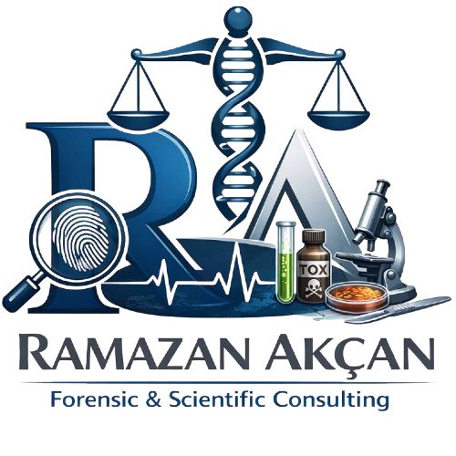
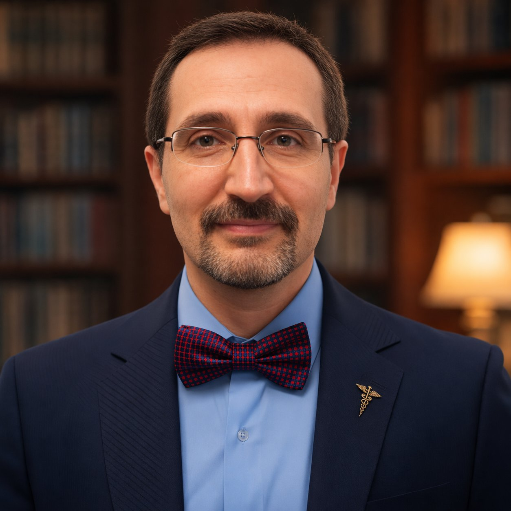

MD · PhD (Biyomühendislik) · 20+ Yıl Deneyim
Davanızdaki tıbbi gerçeği bilimsel dille mahkemeye/savcılığa sunalım.

HMK 293 ve CMK 67 kapsamında bağımsız bilimsel mütalaa.
Ceza ve disiplin soruşturmaları ile yargılamanın herhangi bir aşamasında, medikolegal gerçeği bilim ışığında ortaya koymak için; Avukatlara, Bireylere ve Kurumlara adli tıbbi danışmanlık, uzman görüşü ve bilimsel mütalaa hizmeti.
Akademik güvenilirlik, bilimsel gerekçelendirme ve saha deneyimi.
Mesajınızda davanın konusunu kısaca belirtmeniz yeterli.
En kısa sürede dönüş yapılır.
HMK 293 ve CMK 67 kapsamında bağımsız adli tıp uzman görüşü.
Davanızın her aşamasında, Hukuki süreçlerin her evresinde yanınızdayım.
Mesajınızda davanın konusunu kısaca belirtmeniz süreci hızlandırır.
Avukatlar, yargı sürecine konu olan ve uyuşmazlık yaşayan bireyler için adli tıp ve bilimsel mütalaa ve uzman görüşü hakkında temel bilgi.
Bilimsel Mütalaa, tarafların soruşturma/dava konusu olayı aydınlatmak için soruşturma veya kovuşturmanın her aşamasında alabilecekleri teknik veya bilimsel bir rapordur. Bu rapor türü için "Uzman Mütalaası", "Uzman Görüşü" gibi tanımlamalar da kullanılmaktadır.
Hukuk Muhakemesi Kanunu'nun 293. maddesi ve Ceza Muhakemesi Kanunu 178–179. maddeleri "Uzman Görüşü" başlığı altında bu rapora yasal bir zemin oluşturmuştur. Bilimsel Mütalaa, resmi bilirkişi raporuna üstün ya da rakip değil; onu tamamlayan, eleştiren veya bilimsel açıdan test eden bir araçtır.
Tarafların kendi belirlediği bir kişi veya kurumdan aldıkları Bilimsel Mütalaa/Uzman Mütalaası Raporu ile doğrudan Savcılık ya da Mahkemece görevlendirilmiş bilirkişilerin düzenledikleri rapor arasında hukuki açıdan bir fark veya üstünlük bulunmamaktadır. Her iki rapor türü de savcılık/mahkeme dosyasındaki "takdiri deliller" arasında kabul edilmektedir.
Adli tıp raporları doğrudan hükme etki eden teknik belgelerdir. Aşağıdaki durumlarda bilimsel inceleme gereklidir:
Adli belge incelemelerinde incelemenin belgenin aslı üzerinde yapılması gerekmektedir. Belge aslının kayıp olduğu durumlarda fotokopi üzerinden de inceleme yapılabilir; bu durumda kısıtlılıklar raporda belirtilir.
Dosyanızın ön değerlendirmesi için iletişime geçin.
MD · PhD (Biyomühendislik) · Hacettepe Üniversitesi
Hacettepe Üniversitesi Tıp Fakültesi Adli Tıp Anabilim Dalı'nda profesör olarak görev yapmaktayım. Araştırma alanlarım Klinik Adli Tıp, Adli Patoloji & Toksikoloji, Adli Bilimler, Spektroskopik Analiz Teknolojileri, Malpraktis, Postmortem Analiz ve medikolegal değerlendirmelerdir.
Adalet Bakanlığı Adli Tıp Kurumu'nda sahada adli tıp şube kurucu müdürü olarak görev yaptıktan sonra Hacettepe Üniversitesi Tıp Fakültesi'nde 15 yılı aşkın akademik kariyer sürdürmekteyim. 181 yayın, 1690+ atıf ve H-23 indeksiyle uluslararası adli tıp ve adli bilimler literatürüne katkı sunmaya devam etmekteyim.
5 adımda bilimsel mütalaa raporunuzu alın.
Mesajınızda davanın konusunu kısaca belirtmeniz süreci hızlandırır. En kısa sürede dönüş yapılır.
Alternatif olarak doğrudan WhatsApp kullanabilirsiniz.